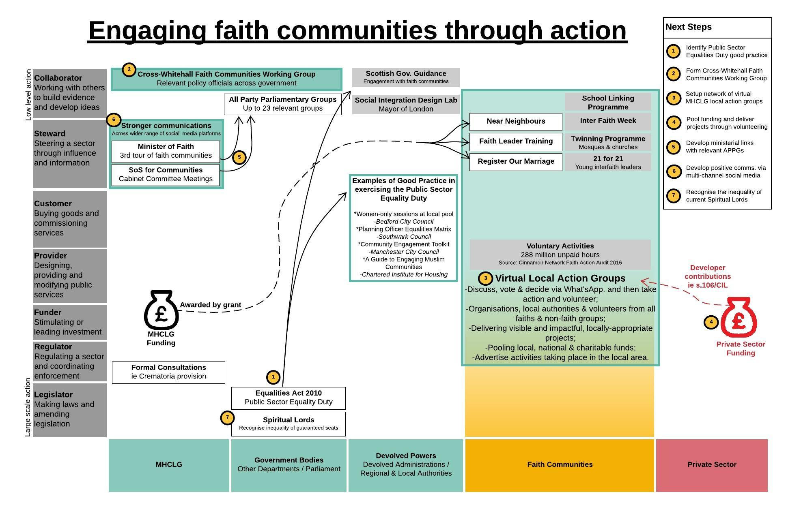

Hey, I'm Luke!
Here, I bring together policy, design, and coding.
Connect with me at LinkedIn.
Thank you for visiting.
Community Cadastre
Land ownership in England is a hidden and complicated issue. This is important because it ties together power, money, and influence. There's also a strong connection between land use, carbon emissions, and being eco-friendly.
In the UK, there isn't a public list showing who owns what land or property (no cadastre). If we knew what kind of houses or buildings are in a community, we could better plan how to reduce carbon emissions. Different structures need different upgrades, like loft or wall insulation. I used free data and software to guess the age of buildings, which helps us know what kind of insulation they might need.
My research question was - ‘How valuable are open geospatial datasets and geospatial open-source software in enabling communities to create their own ‘community cadastre’?’

My 4-Step Methodology
1. Define 'Community Cadastre’
I partnered with a community group. We decided on the following community cadastre criteria:
- Information on whether the land is publicly or privately owned,
- Details of the house archetype for each property,
- Viewed on a map.
2. Identify Relevant Open Geospatial Data and Software
3. Use Machine Learning to Predict Missing Values
Features included: land area, land perimeter, land vertices, land longitude, land latitude, house area, house perimeter, house vertices, house longitude, house latitude, building-to-land ratio.

4. Create and Evaluate a Proof-of-Concept
I designed a machine learning data processing workflow with various supervised and unsupervised algorithms. I evaluated the performance of each model, applied this to the unseen data, and uploaded the building age predictions to a map. You can see the map here.
Engaging Faith Communities
In light of the Brexit Referendum result and an increase in hate crime statistics (including against particular faith and religous groups), the UK Government formed its Integrated Communities Strategy . I designed a visual to facilitate discussions on how Government could increase its engagement with faith communities.

Using Policy Lab's Styles of Government Intervention , I adapted the model to categorise actions between different sectors currently operating within the faith integration space. This resulted in a one-page diagram.
I identified policy gaps and potential opportunities, outlining seven potential interventions and prioritising these based on the complexity of their implementation. This resulted in a list of seven next steps including a potential product - 'WhatsApp Community Notice Boards'.
Although WhatsApp Community Notice Boards have not yet been implemented, the policy analysis exercise identified limitations in Government's strategy, thereby shifting how policymakers understood the current challenges and identified potential opportunities.
Public Sector Equality Duty
The Public Sector Equality Duty mandates public authorities consider how their policies and decisions affect communities with protected characteristics. While working as an Urban Planner in a Local Authority, I led a team in developing the organisation's understanding of its equalities legislative duties.
The Equality Act 2010 specifies that a public authority must have due regard to the need to:
- Eliminate discrimination, harassment, victimisation and any other conduct that is prohibited by or under this Act;
- Advance equality of opportunity between persons who share a relevant protected characteristic and persons who do not share it;
- Foster good relations between persons who share a relevant protected characteristic and persons who do not share it.
I met with planning officers who had a range of equalities-related experiences to share. These experiences were anonymised and written up as case studies. I planned and led a series of interactive workshops for employees to consider how they might overcome the challenges raised in each case study.
The workshops created a safe space for sharing experiences and learning from one another, fostering discussions on potential ways forward. An Actions Table was created as an open working document that staff could contribute to before, during, and after the workshops.
This approach has helped the Local Authority officers in understanding their equalities duties and how to evidence these in their day-to-day practice, which makes a small contributiion to having a more inclusive and reflective culture.
Curriculum Vitae
Experience
- Government Digital Service
- Local Authorities & Central Government
- Teach First
- UN-Habitat
Qualifications
- Master's in Geospatial Data Science, Nottingham Geospatial Institute
- Service Design Certificate, University of Arts London
- Graduate Diploma of Law, Nottingham Law School
- Postgraduate Certificate of Education, UCL Institute of Education
- Master's in International Development & Planning, University of Sheffield
- Bachelor's (Hons.) in Urban Studies & Planning, University of Sheffield & University of Illinois Urbana-Champaign
Published Research
- Family connections: Ethical implications of involving relatives in research, chapter in Lunn, J (2014). 'Fieldwork in the Global South: Ethical Challenges and Dilemmas', pp. 111-125.